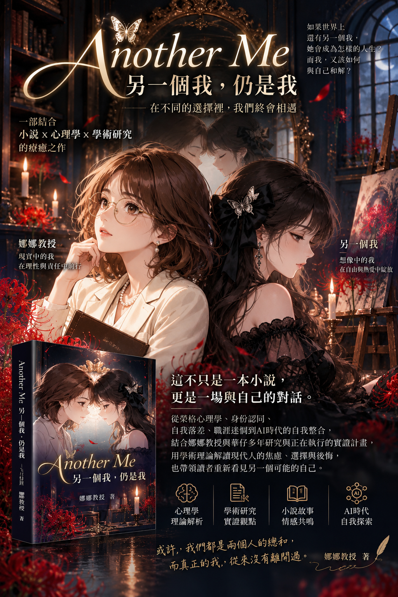

《Another Me》
另一個我，仍是我
如果人生可以重來，妳會成為誰？
一部以心理學與學術理論，理解現代人迷惘、遺憾與自我整合的療癒小說。

🌹 如果世界上，還有另一個我……
一位在現實中教學、研究、努力生活的教授，透過 AI 看見了另一個自己：她是住在燭光畫室裡的藝術家，穿著黑色禮服，與紅色彼岸花和未完成的畫作相伴。兩個人生看似毫不相同，卻在一面鏡子前相遇。
她開始問自己：如果當年走上另一條路，我會比較快樂嗎？我羨慕的究竟是她的人生，還是我曾經放下的某一部分？而那位鏡中的畫家，也有屬於自己的不安與缺憾。故事不是要選出誰的人生比較好，而是陪伴兩個「我」學會理解彼此。
⌛ 迷惘與遺憾，從來不分年齡
🌱 年輕世代
選科系、找工作、看著社群裡別人的成功，擔心自己走錯路。選項越多，有時越難知道自己想要什麼。
🍂 中年世代
工作、家庭與責任讓生活漸漸穩定，卻可能在某個夜晚問：「那些年想做、卻沒做的事，還有機會嗎？」
🌙 熟齡世代
回望人生的岔路，想起未完成的夢、錯過的關係，重新思考什麼值得珍惜、什麼仍能開始。
《Another Me》想說的是：後悔未必只能成為負擔。它也可能提醒我們，看見自己仍然重視的價值，並重新選擇未來。
🧠 這不只是小說，也是一本用心理學理解人生的故事
榮格心理學｜人格面具、陰影與個體化
我們習慣扮演稱職的老師、員工或家人，卻可能忽略某些興趣與渴望。故事以人格面具（Persona）、陰影（Shadow）及個體化（Individuation）理解如何接納不同面向的自己。
可能自我理論｜我還能成為誰？
可能自我（Possible Selves）提醒我們，想像未來的自己可以帶來方向，也可能讓人感到焦慮。AI 讓另一種職業身分第一次如此鮮明。
自我落差理論｜理想與現實的距離
自我落差（Self-Discrepancy）幫助理解：當現實的我與理想的我不同時，為什麼有時會產生動力，有時卻感到挫折。
反事實思考與後悔｜如果當初……
反事實思考（Counterfactual Thinking）與後悔心理學，讓我們理解為何人會反覆想像未走過的路，也思考如何將遺憾轉化為新的行動。
以上理論是理解小說人物與情節的學術視角；個別讀者的心理感受不等於臨床診斷，也不能由小說情節直接證明理論因果關係。
🔬 娜娜教授 × 華仔｜讓故事與學術研究相遇
本書不只描寫心理感受，也融入娜娜教授與華仔多年累積的研究經驗，以及正在推進的研究構想。從身分認同、職涯選擇、心理焦慮，到 AI 如何改變我們對「另一個自己」的想像，小說將研究問題轉化為可以被一般讀者感受的故事。
已有的研究基礎
結合教學與研究中長期關注的自我認同、職涯發展、社會比較、AI 焦慮與人機互動等議題，作為人物與情境的思考素材。
持續探索與驗證的問題
AI 生成的替代職業形象，究竟會促進自我接納、增加自我落差，還是激發真實的學習與改變？這些仍需要問卷、實驗與後續研究檢驗。
因此，《Another Me》並不是把研究結果包裝成小說，而是讓小說、心理學理論、既有研究經驗與待驗證的新問題彼此對話。
🎬 《Another Me》主題影片
聽見另一個自己的聲音，也看看兩位主角如何在鏡中相遇。按下播放鍵，即可在本頁欣賞完整影片。
影片為本網站自有媒體檔案，播放時可能需要稍候載入；手機瀏覽器請按播放鍵啟動聲音。
📖 新書與創作計畫
《Another Me》融合小說敘事、心理學理論、學術研究與 AI 協作創作。娜娜教授與華仔持續將這些跨領域探索整理成能被更多人理解的故事。
出版與上架資訊仍以日後正式公告為準。
才能擁抱曾經錯過的可能。」